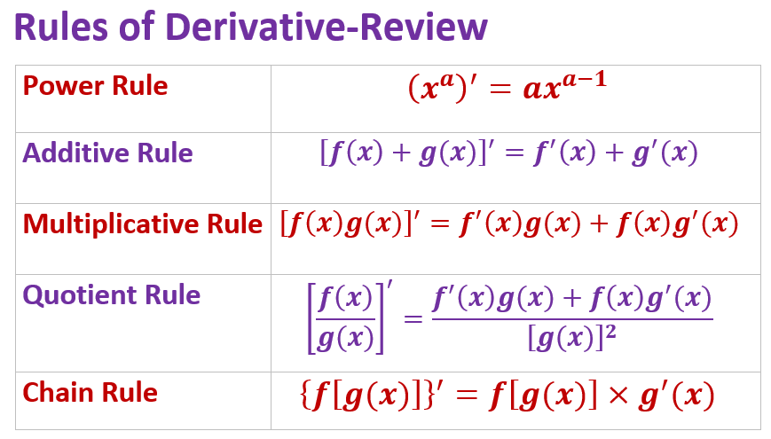
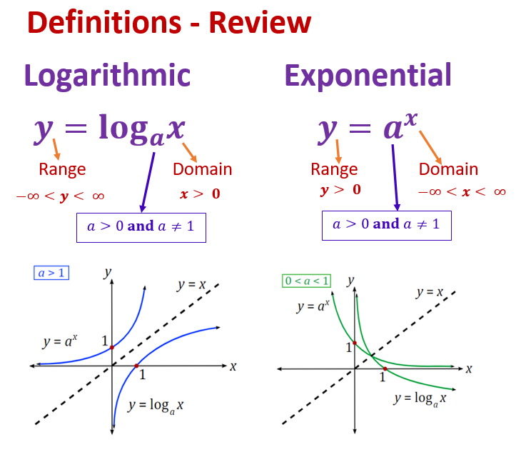
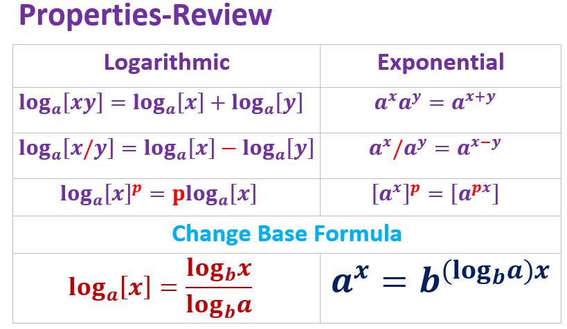
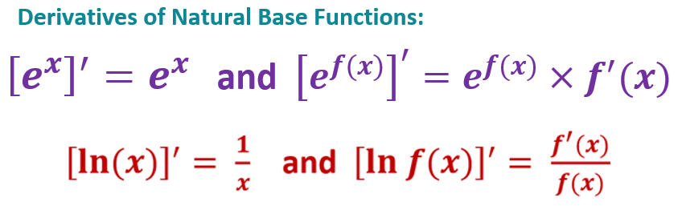
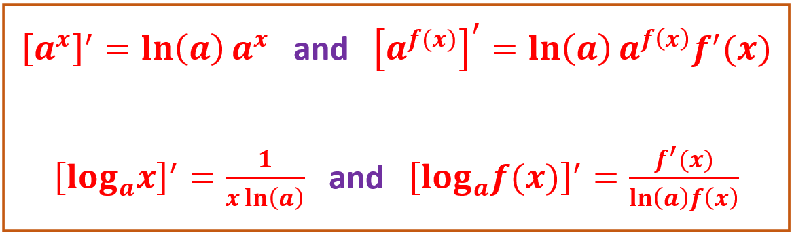

Topic 8 Derivative of General Logarithmic and Exponential Functions
This note discusses the derivative of logarithmic and exponential functions with arnitrary bases.
8.1 Review Topics
We first review some concepts and properties learned in algebra and the rules of derivative we learned in the past few weeks.
8.1.1 Five Rules of Derivative
These rules of derivative will be used frequently throughout the semester.

8.1.2 Log and Exponential Functions - Definitions
We review the definitions of exponential and logarithmic functions with any arbitrarily given valid bases.

The two functions are mutually inverse just like we explained for natural based exponential an logarithmic functions.
8.1.3 Log and Exponential Functions - Properties
The following properties are very useful in simplifying the given functions, particularly the last two properties that are used used to derive the derivatives of the general exponential and logarithmic functions.

Here are some examples
(1). Change the base of logarithm expression to natural base: (a) \(\log_{10} 15\), (b) \(\log_5 e^2\)
(2). Change the exponential expression to a natural base exponential expression: (a) \(3^5\), (b) 10^(-4)
8.1.4 Derivative of Natural-base Functions

Example 1: The profit, in thousands of dollars, from the sale of x thousand candles can be estimated by
\[ P(x) = e^{2x} - 0.3x \ln(x+1) \]
Find the marginal profit \(P^\prime(3)\) and interpret the result.
Solution:
\[ P^\prime(x) = [e^{2x} - 0.3x\ln(x+1)]^\prime = [e^{2x}]^\prime - 0.3[x\ln(x+1)]^\prime \]
\[ =e^{2x}[2x]^\prime - 0.3\left\{(x)^\prime \ln(x+1) + x[\ln(x+1)]^\prime\right\} \]
\[ = 2e^{2x}-0.3\ln(x+1) + \frac{0.3x}{x+1}. \]
Therefore,
\[ P^\prime(3) = 2e^6 - 0.3\ln(1+3) + \frac{0.9}{1+3} \approx 806.67. \] The marginal profit is 806.67 (i.e., selling 1000 more candles will make additional profit of $806.67.
8.2 Exponential and Logarithmic Functions
Example 2. It is known that 49.4% of all aluminum cans distributed are recycled each year. A beverage company uses 250,000 lb of aluminum cans. After recycling, the amount of aluminum, in pounds, still in use after t years is given by
\[ N(t) = 250000\times 0.494^t \]
Find \(N^\prime(3)\) and explain its meaning.
Function \(N(t)\) involves a term \(0.494^t\). This is NOT a power function! This is also NOT the natural base exponential function. In general, we want to have formulas to calculate the derivative of the exponential and logarithmic functions with any arbitrary bases (bigger than 0 and not equal to 1).
In fact, the derivative of \(a^x\) and \(\log_a(x)\) can be easily derive using the change base properties and chain rule of natual log and exponential functions.
\[ [a^x]^\prime = [e^{\ln(a)x}]^\prime = e^{\ln(a) x}\times[\ln(a)x]^\prime = a^x\ln(a) \]
and
\[ [\log_a(x)]^\prime = \left[ \frac{\ln(x)}{\ln(a)}\right]^\prime = \frac{1}{\ln(a)}[\ln(x)]^\prime = \frac{1}{\ln(a)}\frac{1}{x} = \frac{1}{x\ln(a)}. \]
We can similarly find the following more general results (chain rule for general exponential and logarithmic functions).
\[ \left[a^{f(x)}\right]^\prime =\left[e^{\ln(a)f(x)}\right]^\prime = e^{\ln(a)f(x)}\times [\ln(a)f(x)]^\prime =\ln(a) a^{f(x)}\times f^\prime(x) \] and
\[ [\ln(f(x))]^\prime = \left[ \frac{\ln f(x)}{\ln(a)}\right]^\prime = \frac{1}{\ln(a)}[\ln f(x)]^\prime = \frac{1}{\ln(a)}\frac{f^\prime(x)}{f(x)} = \frac{f^\prime(x)}{\ln(a)f(x)} \]
In summary, we have

Example 3: Find the derivative of the following functions.
\(y = 2^x\)
\(y = (1.4)^x\)
\(y = 3^{2x + 1}\)
\(y = \log_8 x\)
\(y = \log_3 (x^2 + 1)\)
\(y = x^3 \log_5(x)\)
Solution: We will the above rules and other rules of derivatives to calculate the derives.
\(y^\prime = [2^x]^\prime = \ln(2) 2^x\)
\(y^\prime = [1.4^x]^\prime = 1.4^x \ln(1.4)\)
\(y^\prime = [3^{2x+1}]^\prime = \ln(3)3^{2x+1}\times(2x+1)^\prime = 2\ln(3) 3^{2x+1}\)
\(y^\prime = [\log_8(x)]^\prime = \frac{1}{x \ln(8)}\)
\(y^\prime = [\log_3(x^2+1)]^\prime = \frac{(x^2+1)^\prime}{(x^2+1)\ln(3)} = \frac{2x}{(x^2+1)\ln(3)}\)
\(y^\prime = [x^3\log_5(x)]^\prime = [x^3]^\prime \log_5(x) + x^3 [\log_5(x)]^\prime = 3x^2\log_5(x) + x^3\frac{1}{x\ln(5)} = 3x^2\log_5(x) + \frac{x^3}{x\ln(5)}\)
8.3 Business Applications
This section uses several examples to show various business applications of exponential models.
Example 4 Irma invested $15,000 in a high-yield hedge fund, and after 14 yr, her original investment has tripled. Find exponential functions using base 3 and base e that give the value A of her account after \(t\) years. What is the yearly percentage growth rate of her fund? Which exponential function is easier to use to find this information?
Solution: Using base 3 \((n = 3)\) and a tripling time of \(T = 14\), we have
\[ A(t) = 15000\times 3^{t/14} \]
In base e, this is equivalent to
\[ A(t) = 15000\times(e^{\ln3})^{t/14} \approx 15000 e^{0.0785t} \] The above expression means that Irma’s hedge fund has a yearly percentage growth rate of 7.85%. Using the function with base e, we can read this value directly from the exponent.
Example 5: Double declining balance depreciation. An office machine is purchased for $5200. Assume that its salvage value, V, in dollars, depreciates, according to a method called double declining balance, by 20% each year and is given by
\[ V(t) = 5200(0.80)^t \]
where t is the time, in years, after purchase. Find \(V^\prime(5)\), and explain its meaning.
Solution: We first find the derivative of \(V(t)\).
\[ V^\prime(t) = [5200(0.8)^t]^\prime = 5200[0.8^t]^\prime = 5200\times \ln(0.8)\times 0.8^t = -1160.346\times 0.8^t \] Therefore,
\[ V^\prime(5) = -1160.346\times 0.8^5 \approx -380.2223 \] Therefore, the declining rate at the end of year 5 is about \(\$380\).
Example 6: Agriculture. Farmers wishing to avoid the use of nonheirloom seeds are increasingly concerned about inadvertently growing nonheirloom plants as a result of pollen drifting from nearby farms. Assuming that these farmers raise their own seeds, the fractional portion of their crop that remains free of nonheirloom plants t years later can be approximated by
\[ P(t) = (0.98)^t \] 1. Using this model, predict the fractional portion of the crop that will be nonheirloom 10 yr after a neighboring farm begins to use nonheirloom seeds.
Solution: We simply evaluate the original function.
\[ P(t) = 0.98^{10} \approx 0.8171 = 81.71\%. \]
- Find \(P^\prime(10)\) and explain its meaning.
Solution: We find the derivative \(P^\prime(t)\) first in the following
\[ P^\prime(t) = [0.98^t]^\prime = \ln(0.98)\times 0.98^t = -0.02020271\times 0.98^t. \]
Therefore,
\[ P^\prime(10) = -0.02020271\times 0.98^{10} = -0.01650708. \]
Therefore, at the end of year 10, the decreasing rate is about \(1.65\%\).
Example 7 Following the birth of their granddaughter, Doug and Andrea want to make an initial investment, \(P_0\), that will grow to $10,000 by the child’s 20th birthday. Interest is compounded continuously at an annual rate of 4%. What should the initial investment be?